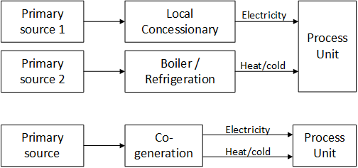
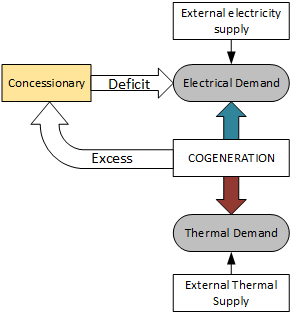
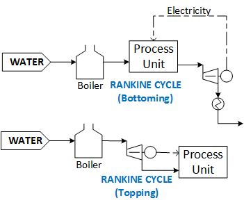
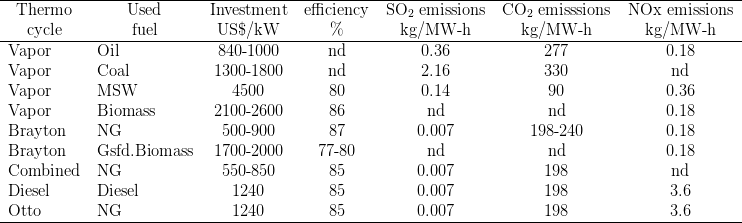

Cogeneration
Created Monday 18 August 2014
Based mainly in Perrella, 2002 (Printed book)
- The cogeneration concept is related to the combined generation of thermal energy and electro-mechanic work from a unique energy source in order to supply to a process unit.
- It can be applied at industrial level, tertiary level (airports, hospitals, malls, etc). Also can be implemented within interconnected systems as well as isolated locations, depending upon the size of these systems.
- The energy management for a process unit using a cogeneration facility compared with a common arrangement can be illustrated as follows:

- In order to guarantee the thermal and electrical demand of the facilities, the cogeneration plant must interact with external suppliers/systems as illustrated here:

- The thermodynamic cycles that can be used in cogeneration systems includes: Rankine (conventional or Organic), Brayton, combined, Diesel and Otto. Other innovative cycles as Kalina, sterling, ARCs also can be used.
- When the cogeneration plant attends the thermal requirements rather than electro-mechanic requirements, the operating regime of the system is called Bottoming regime, otherwise the system will be operating in a Topping regime. It is illustrated in the following figures:

- In combined cycles, the term Topping refers to the subsystem with the largest power generation. By other side, the term Bottoming refers to the following subsystem in the energy cascade.
- Given that most of the process units demand low enthalpy levels (though as steam circulation), which are not coincident with the enthalpy level necessary for electro-mechanical generation, the Topping generation are more common than Bottoming cycles.
- The operation strategy of the cogeneration system can be established according the following alternatives:
- //Thermal Parity:// When the cogeneration system operation is adjusted to the profile of the thermal demand of the process unit. The rest is destined for electro-mechanical power. This practice is more common because the lack of external supply of industrial heat/cold. If there is a surplus in power generation, it must be sold to the concessionary, but if there is a deficit, this must be imported.
- Electrical Parity: The operation of cogeneration system is adjusted to the profile of the electrical demand of the process unit. The rest is destined for thermal supply for the unit. If there is a surplus of thermal generation, it is often rejected to the atmosphere. Commonly, if there is a deficit of thermal energy, this must be provided by an auxiliary system.
- Economic Export: The thermal/work generation is sold according to the market price and opportunity.
- This strategy must be defined according the financial issues related to the capital investment.
- The operation strategy can be modified according to the operation profile/projection of the process unit (this implies an evaluation of deficit/surplus of the cogeneration system in the three scenarios/strategies).
- in order to select the appropriate cycle for cogeneration, there are various key variables for comparison of each analysed alternative:
- Power to heat ratio:// Relates the quantities of Electrical energy and the thermal energy GENERATED// by the cogeneration facility. The typical values for different technologies are presented as follows:
- Rankine cycle (Counter-pressure) 0.10-0.30
- Rankine cycle (condensing) 0.40-1.50
- Gas cycle 0.30-0.80
- Combined cycle 0.60-1.50
- Diesel cycle 0.80-2.40
- Specific steam consumption
- Specific fuel consumption: the highest value is reported for steam cycle, while the lowest is reported for the diesel cycle.
- Heat Rate
- Global thermal efficiency
- Power to heat ratio:// Relates the quantities of Electrical energy and the thermal energy GENERATED// by the cogeneration facility. The typical values for different technologies are presented as follows:
- Regarding the characterization of the process unit there are some key info in order to fit the cogeneration system to the unit requirements:
- Process required Heat/cold.
- Mass flows and temperature levels required within the unit.
- Electrical load curve considering diary and seasonal variations.
- Thermal load curve considering diary and seasonal variations.
- Possible electric and thermal peaks.
- Continuous-demand components and variable-demand components.
- Cooling equipment.
- Heating equipment.
- Fuel supply and storage capacity.
- Fuel flexibility (dual feed equipment)
- Process waste/emissions management.
- Generally, a cogeneration facilities should not be used for demand peaks, the best practice is to operate the cogeneration system continuously during long periods. The peaks can be attended by auxiliary systems or by concessionary contracts.
- According to the required availability (av.) of the system, the technology used for power generation can be classified as follows: Cogeneration (continuous, >90% av.), Combined cycle (Baseline, >50% av.), Combined cycle (Cyclic,10-50% av.), Gas turbines (Peak, 1-10% av.) and Gas turbines (Stand by, <1% av.).
- Following table summarizes the investment (by 1994) and emissions of some cogeneration technologies
